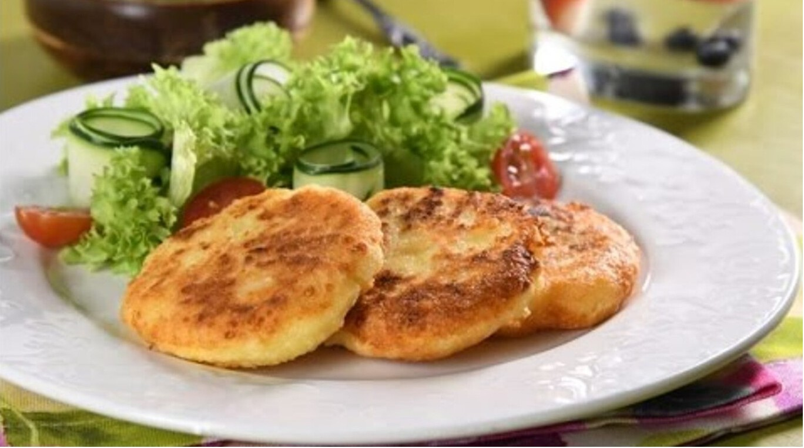

Home
Tortitas de Papa

Descripción
Las tortitas de papa son un platillo casero, crujiente por fuera y suave por dentro. Esta versión incluye queso panela y jamón, perfecta para acompañar con una ensalada fresca.
Ingredientes
- 1 kg de papa
- 200 gramos de queso panela rallado
- 200 gramos de jamón picado en cuadros pequeños
- 1 huevo
- 100 gramos de pan molido
- Sal al gusto
- Aceite (para freír)
Utensilios
Pasos
- Se lavan las papas y se ponen a cocer unos 40 min, que estén suaves, no deshaciéndose. Cuando ya estén listas se sacan y se pelan, se aplastan con el tenedor para que quede como puré, se deja enfriar.
- Después se coloca el queso rallado, el jamón, el huevo, un poco de pan molido y sal. Se revuelve todo muy bien para que quede bien mezclado; se va poniendo el pan molido según sea necesario.
- Se va colocando el sartén al fuego con bastante aceite. Mientras se calienta, se van realizando las tortitas de papa no tan gorditas para que se doren bonito. Ya que están, se colocan al aceite con cuidado y se van revisando para darles la vuelta para que se doren bien, y se retiran del fuego.
- Se sirven con una ensalada y ¡listo!